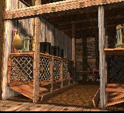
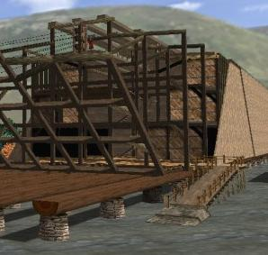

|
|
Home |
| F R E E D O W N L O A D S. | ||
 |
3D Creation Museum exhibit. Test level. PC only. Requires DirectX 8. (5.8MB). Zipped. More info here. | |
| 2D sea simulator using buoyancy physics (damping adjusted manually, surprise surprise). Requires VB runtime. (120kB) | ||
| Roll stability, define the transverse cross-section parametrically or by coordinates. Requires VB runtime. (50kB). | ||
 |
3D Walk around inside the Ark. Test preview. (10MB zip) | |
| 3D Ark under construction (25MB zip) | ||
|
|
||
|
VISUAL BASIC RUNTIME To install Visual Basic 6.0 Runtime files on your computer, free from Microsoft... (1MB) For details about Visual Basic 6.0 Runtime files click here
Most PC's running Windows will have this. To install Direct X go to www.microsoft.com |
||

 DIRECT X
DIRECT X